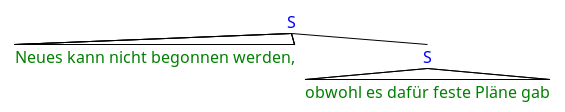
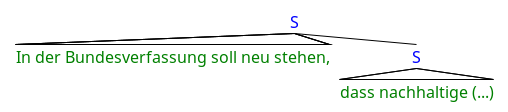
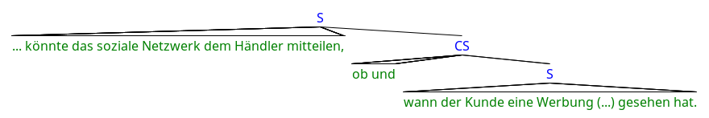

public class GrammarInducedModule
extends java.lang.Object
This class implements Grammar Induced Sentiments. They also differ
from those found implemented by ClassicModule in that the target of
the sentiment is not a (noun) phrase but the whole sentence or clause.
| Modifier and Type | Method and Description |
|---|---|
java.util.Collection<Frame> |
findFrames(SentenceObj sentence) |
java.util.List<java.lang.Object> |
findTarget(WordObj word,
SentenceObj sentence)
Determine the span of the target.
|
boolean |
isTrigger(WordObj word,
SentenceObj sentence)
Tests if a word triggers a subjective expression.
|
public java.util.Collection<Frame> findFrames(SentenceObj sentence)
Frame objects. Each represents a SubjectiveExpression.
Each implementation of this interface is expected to implement only a single strategy for finding sentiment
expressions. Their results are combined by SentimentChecker.public java.util.List<java.lang.Object> findTarget(WordObj word, SentenceObj sentence)
Determine the span of the target. We do this using the constituency tree.
Starting from the terminal node that represents word, we go
up through the tree until we hit an S node. This is the
containing clause.
Then we remove certain subclauses of the containing clause. See (1) for why this is necessary. Although the subclause appears as a child of the containing clause in the syntactic tree, semantically it is not an adjunct of the main clause or any part thereof. However, there are also sentences like (2) were this is the case.
(1) 
(2) 
Not all cases are as clear-cut as these ones. For now, we simply remove all direct children of the containing clause that have the type S.
In many cases subclauses are erroneously not excluded because the parser has wrongly put another node between the two S nodes (3). This could be worked around by not just the direct children of the containing clause. However, I do not know if and in which cases S nodes can be indirect children of another S node and thus when these S nodes should be removed. This area needs further work.
(3) 
Finally, we remove all punctuation that is a direct child of the
containing clause. This is consistent with the gold standard
(anno[1-3].txt).
word - The word that triggers the subjective expressionsentence - The sentence containing wordCollection of Terminal
and Nonterminal objects.public boolean isTrigger(WordObj word, SentenceObj sentence)
word - The word to testsentence - The sentence containing word